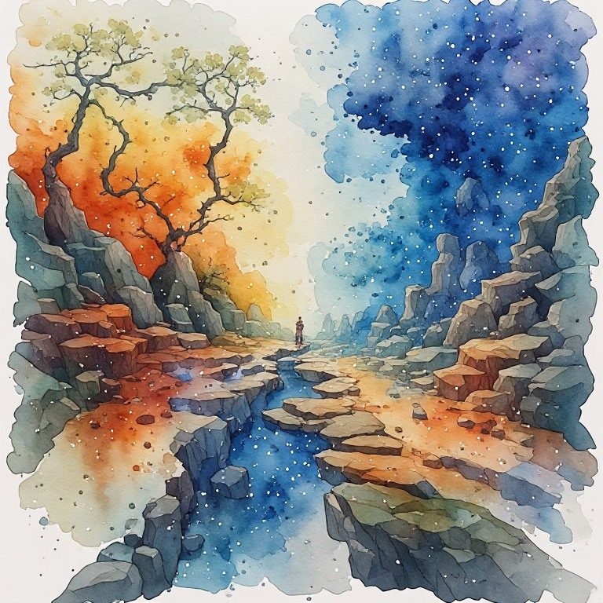

Pillar 10 The Sacred Is Here
← Pillar 9 Language Shapes What's Possible · The Creative Radical Collection · Pillar 11 The Crossing Point →
Pillar: Pillar 10 The Sacred Is Here · Across every book
Where have you been waiting to feel lifted out, when the thing you wanted might already be here?
The hunger is to be lifted out of the grey ordinary into something glorious, a cause worth dying for and worth killing for. Power sacralizes itself and any present cruelty is justified by the height of the cause. This pillar puts the sacred here, in the ordinary afternoon, so no one can hand you a transcendent reason to harm the actual life in front of you.
Notice
Notice one truly ordinary moment today, a bus ride, doing the dishes, waiting in line. Notice any impulse to rush past it toward something more meaningful.
Practice
Sit inside one ordinary moment for a few minutes on purpose. Do not use it to plan or scroll or escape. Look for what is actually here, without needing to leave it for something higher.
Reflection
What have you been waiting to feel somewhere else that might already be available in this Tuesday?
What cause or ideal have you been tempted to place above your actual, ordinary life?
